10:00 - 19:00Wolne miejsca
990 złZapisz się →
Kurs barmański w centrum Gdańska. Zdecydowana większość zajęć to praktyka, na oryginalnych alkoholach. Certyfikat po polsku i angielsku w cenie.
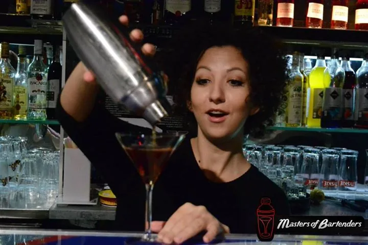
Jeżeli termin jest na liście, są na niego wolne miejsca. Wybierz, wypełnij dane do certyfikatu i zapłać od razu online.
Absolwenci wielu szkoleń mówią: „wiem wszystko, nie umiem nic”. U nas każdy przygotowuje wszystkie klasyczne koktajle sam.
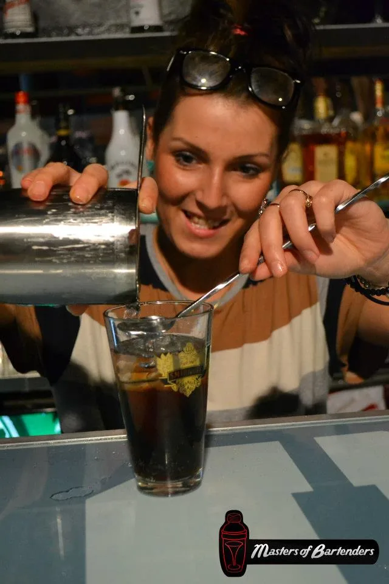
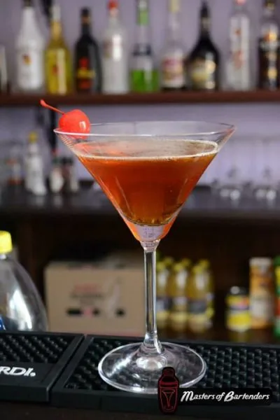
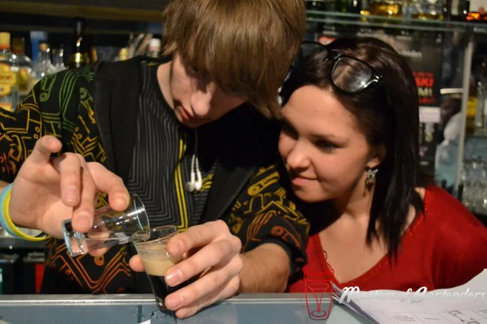
Jedna uczciwa cena: egzamin, certyfikat i materiały są w niej zawarte. Absolwenci płacą mniej: drugi kurs -50 zł, trzeci i każdy kolejny -100 zł.

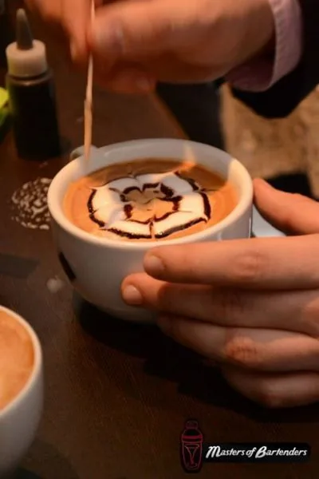
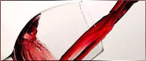
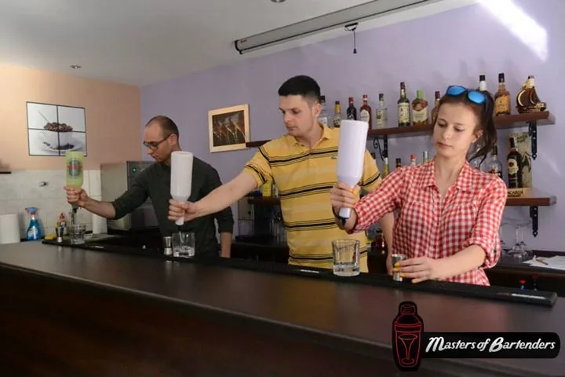
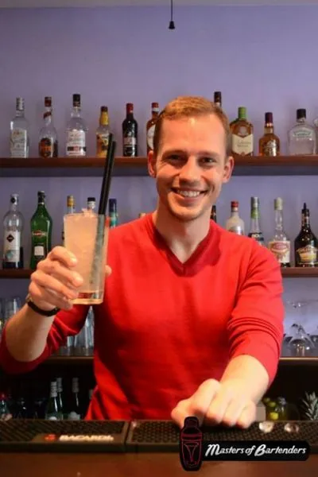
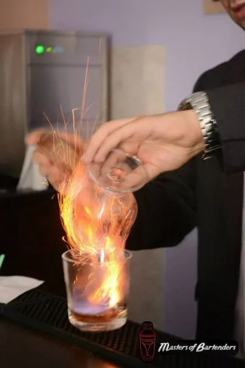
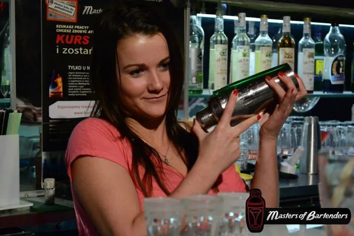
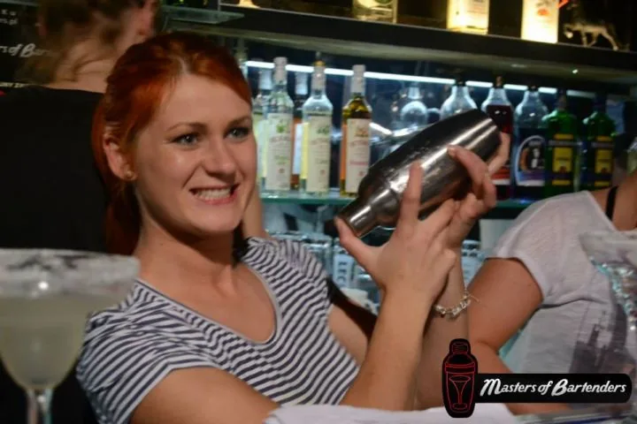
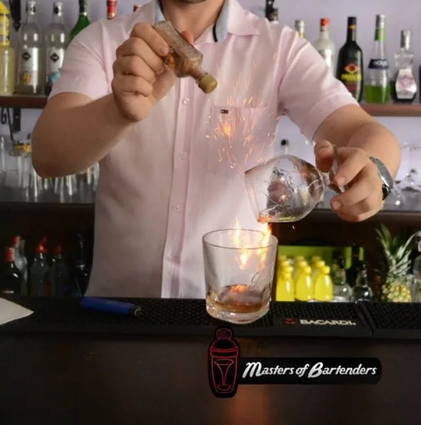
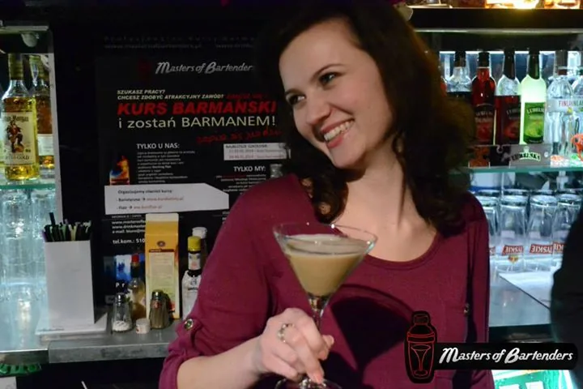
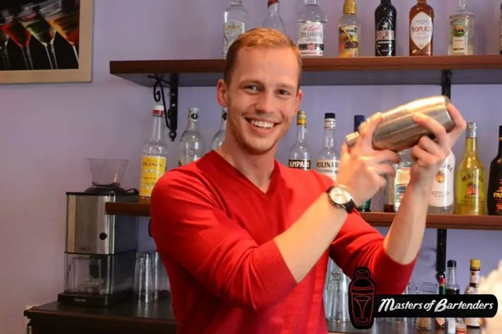
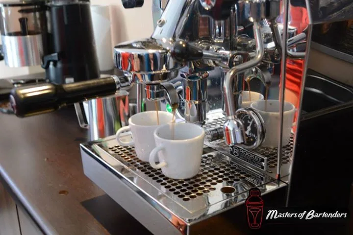
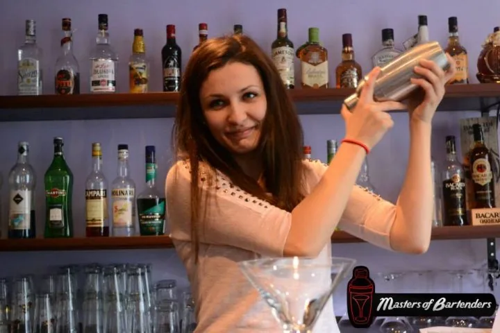
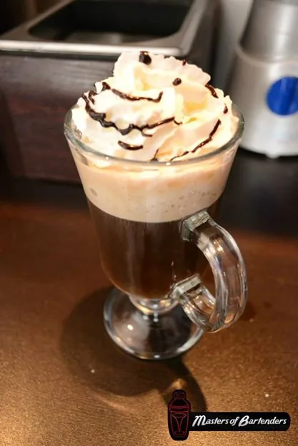
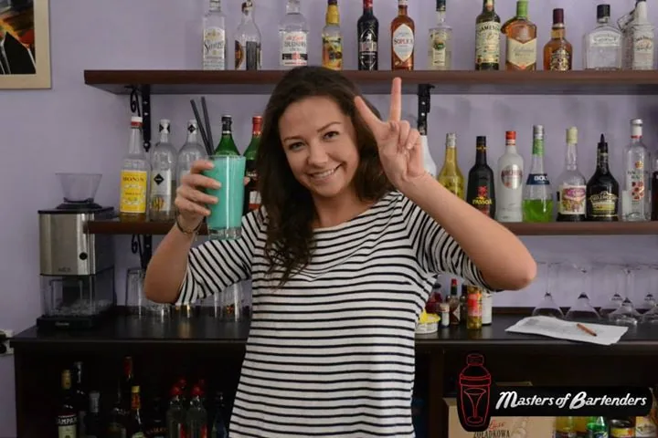
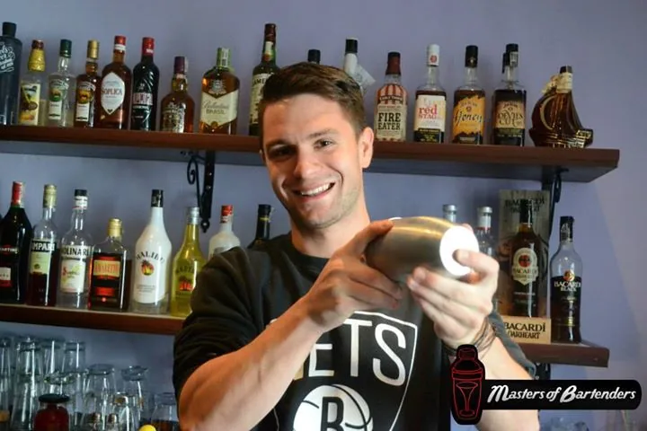
Prezent, który daje radość i jest praktyczny: na urodziny, imieniny, święta czy osiemnastkę.
Masters of Bartenders jest wpisana do Bazy Usług Rozwojowych (BUR) i do Rejestru Instytucji Szkoleniowych. Prowadzimy też szkolenia zamknięte dla lokali i szkół oraz kursy indywidualne.